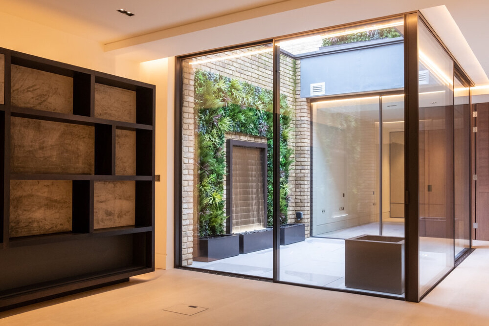
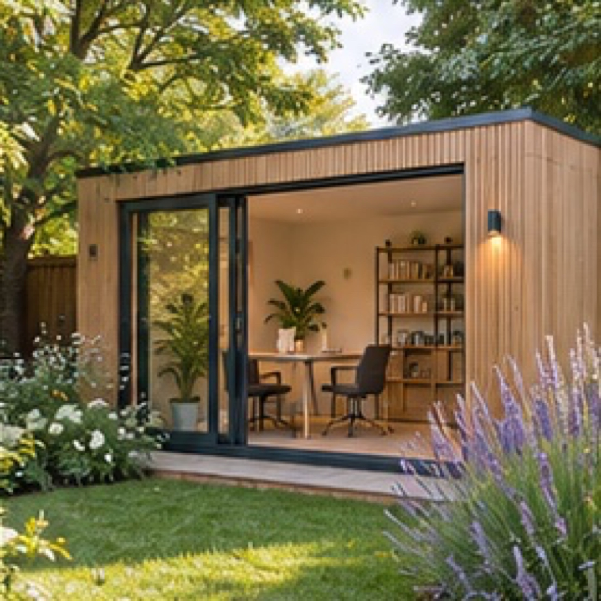
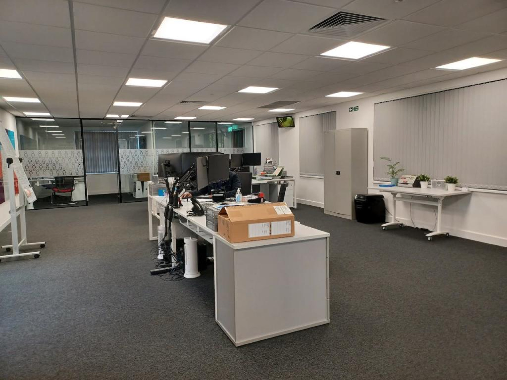
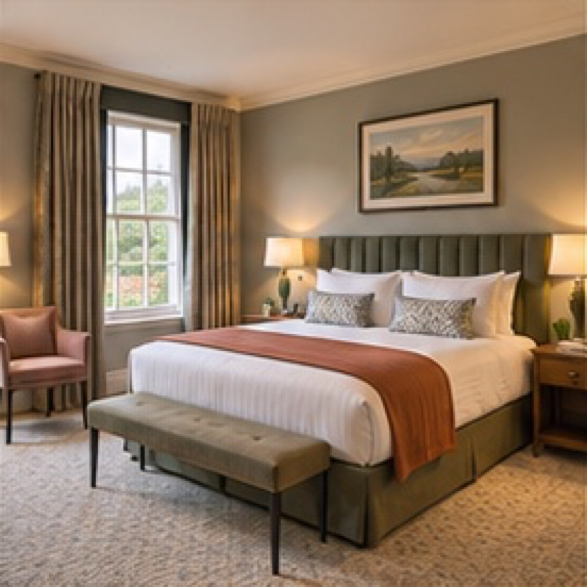
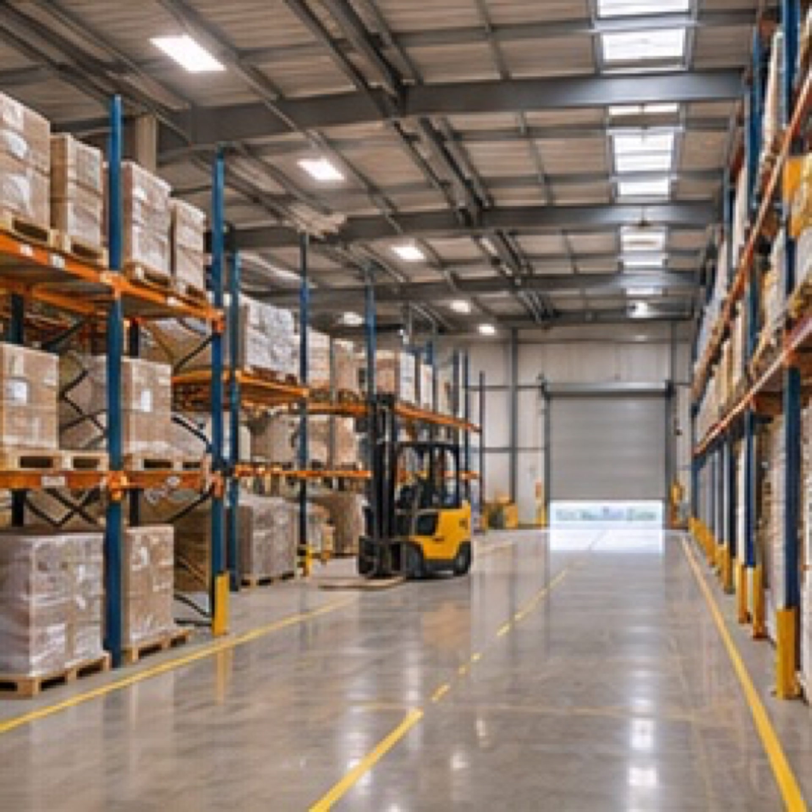
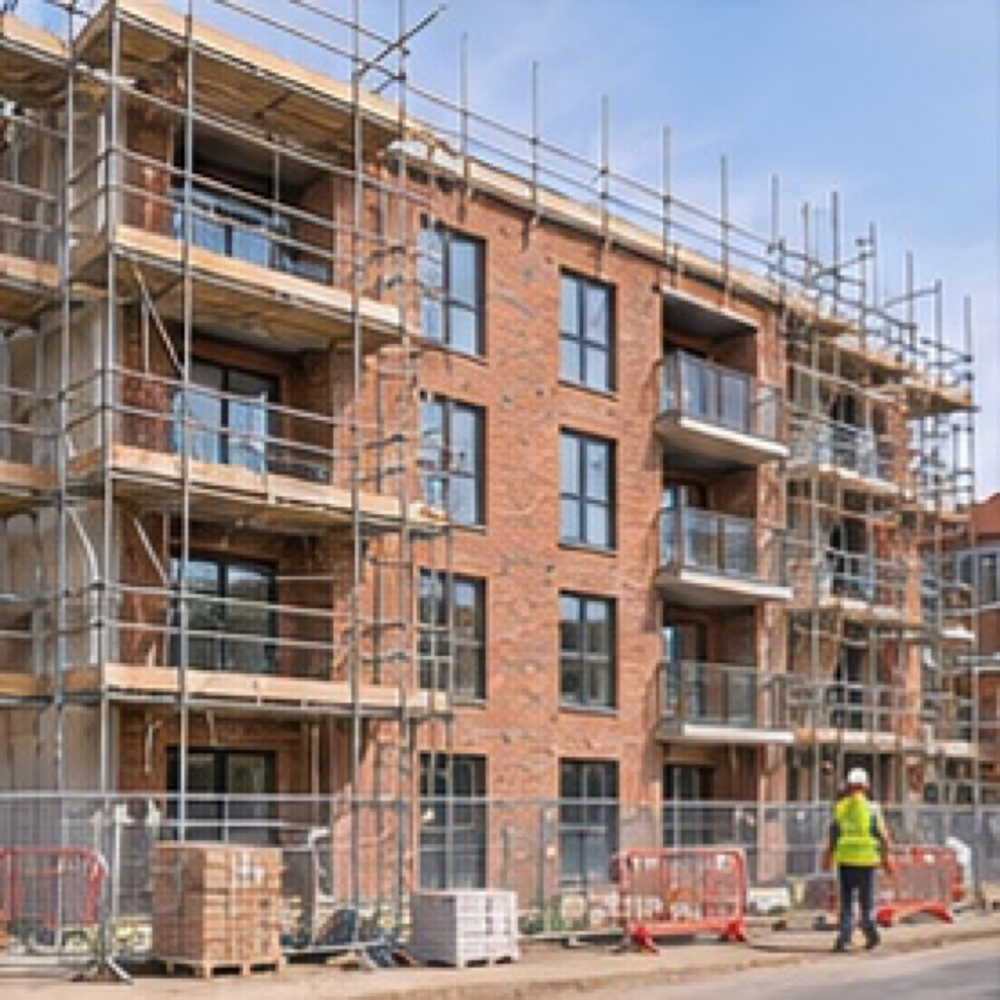
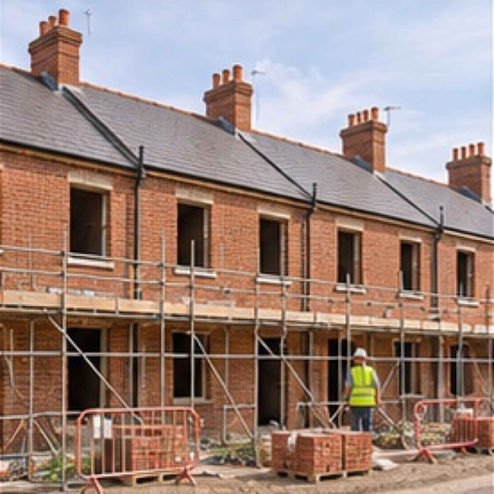

London · NW1
Residential renovation
Full-height glazing draws light from the planted courtyard into the living space, where built-in shelving runs along the adjoining wall.
Explore Civic’s work in Slough, London NW1, Banbury and Maidenhead, alongside illustrated ideas for future projects.

London · NW1
Full-height glazing draws light from the planted courtyard into the living space, where built-in shelving runs along the adjoining wall.

Ascot · SL5
A detached family house arranged around a sheltered outdoor dining space, with a separate entrance for muddy boots and garden tools.

Marlow · SL7
Open the rear of a narrow kitchen into a new dining room, with level access to the terrace.

Ealing · W13
Fit a bedroom, shower room and staircase into an existing roof while retaining storage under the eaves.

Woking · GU2
Rework the ground-floor layout around a level shower, wider doorway and space for assisted use.

Henley-on-Thames · RG9
Plan appliance positions, stone worktops and a separate laundry area around the household’s daily routine.

Bracknell · RG1
Create an insulated workspace with power, natural light and a usable path from the house.

Guildford · GU1
Link two garden levels with broad steps, seating and paving laid to suitable falls.

Richmond · TW9
Prepare sash windows, repair cornice details and finish walls and woodwork in a coordinated palette.
Civic has experience converting houses into dental surgeries. When discussing a conversion, we look at how patients will move between reception and treatment rooms, where staff need space and how the layout can accommodate specialist equipment.
We’ve helped businesses set up new restaurants and renovate existing premises. For a new opening, we discuss how the dining room, counter and kitchen will work together. For a refurbishment, we also consider which areas can stay in use during the work.
Our experience includes helping operators set up their kitchens. Bring your menu and equipment list so we can discuss delivery access, storage, preparation, cooking and wash-up with your kitchen supplier.

Slough
The finished office combines open-plan desks with a glazed meeting room, giving the team space for both shared work and private conversations.

Reading · RG1
Reconfigure meeting rooms and workstations, with phased deliveries while adjoining offices stay occupied.

Wokingham · RG4
Coordinate lighting, display joinery, stock storage and a durable entrance floor before opening day.

Windsor · SL4
Use a sample room to agree finishes, then schedule bedroom and bathroom upgrades around bookings.

Kingston upon Thames · KT1
Arrange banquette seating, service routes and lighting for a dining room refresh.

Slough · SL1
Sequence repairs and floor finishes in separate bays around deliveries and loading access.

Banbury · OX16
Arched openings, a green dome and a minaret distinguish this purpose-built place of worship in Banbury.

Maidenhead · SL6
A single-storey addition pairs brickwork with a broad run of windows alongside the existing place of worship in Maidenhead.

High Wycombe · HP1
Coordinate storage, flooring and lighting around the school holiday programme.

Staines-upon-Thames · TW1
Refresh the main hall and servery with easy-clean finishes and accessible circulation.

Watford · WD1
Replan reception seating, privacy screening and wayfinding around patient arrivals.

Beaconsfield · HP9
Adapt a small ancillary space for storage and meetings while coordinating works around services.

Uxbridge · UB8
Coordinate foundations, frame, envelope and communal areas against a phased delivery programme.

Farnborough · GU1
Define the structural package, vehicle doors, slab requirements and service routes for a new workshop.

Basingstoke · RG2
Sequence the construction of several homes around shared access, utility connections and handover dates.